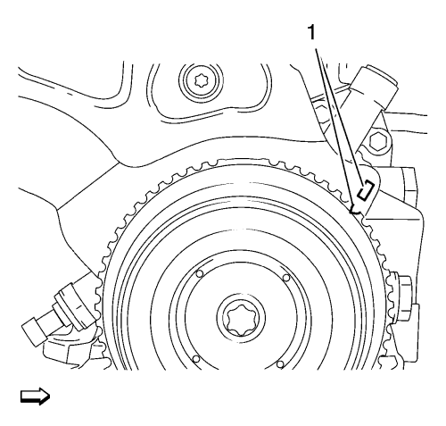
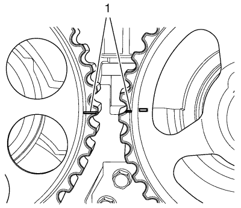

Inspección de la correa de distribución Inspección
Herramientas especiales
EN 852 Herramienta de bloqueo
Si desea informarse sobre herramientas regionales equivalentes, consultar
Herramientas especiales : 1.6L LXT .
Procedimiento de desmontaje
- Retire la tapa delantera superior de la correa de distribución, consulte Desmontaje de la cubierta delantera de la parte superior de la correa de distribución .

Nota: Gire el motor en su sentido de rotación. La marca de la polea del cigüeñal y la marca de la correa de distribución deben estar alineadas (1).
- Ajuste el motor al punto muerto superior (TDC).

- Las marcas del engranaje del árbol de levas deben alinearse la una frente a la otra (1).
- Coloque la herramienta de bloqueo EN 852.
- Si las marcas no están alineadas, consulte
Inspección de la correa de distribución : Revisión → Ajuste .
Procedimiento de montaje
Monte la tapa delantera superior de la correa de distribución. Consultar Montaje de la cubierta delantera de la parte superior de la correa de distribución .
| © Copyright Chevrolet. Reservados todos los derechos |